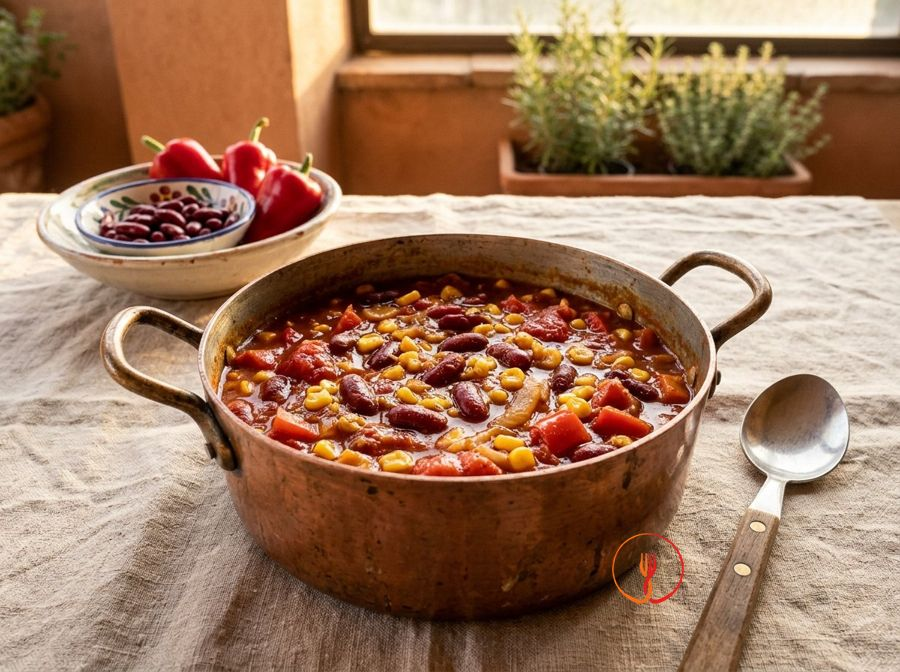

Chili sin carne
Chili vegano con fagioli e mais.
Una versione vegetariana ricca e speziata del celebre stufato tex-mex, perfetta da condividere in una serata tra amici. La combinazione di fagioli rossi e mais offre una consistenza densa e un gusto avvolgente.
Ingredienti
- Fagioli rossi (cotti, sgocciolati)480 g
- Mais dolce (sgocciolato)150 g
- Pomodori pelati400 g
- Peperone rosso200 g
- Cipolla dorata100 g
- Olio extravergine di oliva30 g
- Aglio1 spicchio
- Cumino in polvere1 cucchiaino
- Peperoncino fresco5 g
- Paprika affumicata1 cucchiaino
- Sale fino6 g
- Brodo vegetale200 ml
Allergeni
Nessuno dei 14 allergeni principali tra gli ingredienti.
Può contenere tracce di: Sedano.
Procedimento
- Mondare la cipolla e il peperone, tagliandoli a cubetti uniformi di circa 1 cm.
- In una casseruola dal fondo spesso, scaldare l'olio extravergine e soffriggere la cipolla e l'aglio schiacciato per 5 minuti a fuoco medio (circa 140°C).
- Aggiungere il peperone e rosolare per 7 minuti, mescolando spesso per uniformare la cottura.
- Unire il cumino, la paprika e il peperoncino tritato (privato dei semi se si desidera meno piccantezza) e tostare per 1 minuto.
- Aggiungere i pomodori pelati, schiacciandoli grossolanamente con un cucchiaio, e regolare di sale.
- Versare nella casseruola i fagioli rossi, il mais e il brodo vegetale caldo.
- Portare a bollore, quindi abbassare la fiamma e cuocere a fuoco lento per circa 25 minuti con coperchio semichiuso.
- Rimuovere il coperchio negli ultimi 5 minuti di cottura per far restringere il sugo fino a ottenere una consistenza densa e corposa.
- Lasciar riposare il chili per 5 minuti prima di servire per permettere ai sapori di stabilizzarsi.
Consigli
- Soffriggi le spezie insieme alla cipolla per sprigionare gli oli essenziali e intensificare la profondità del sapore.
- Schiaccia i pomodori pelati grossolanamente con un cucchiaio per ottenere un sugo dalla consistenza rustica e corposa.
- Lascia cuocere a fuoco lento finché il liquido non si sarà ristretto, creando una salsa densa e lucida.
Varianti
- Servi il chili accompagnato da riso basmati bianco cotto al vapore per un piatto unico bilanciato.
- Aggiungi un quadratino di cioccolato fondente a fine cottura per donare una nota di colore e profondità al sugo.
Valori nutrizionali (stima)
| Per porzione (340 g) | Per 100 g | |
|---|---|---|
| Energia | 1104 kJ / 264 kcal | 325 kJ / 78 kcal |
| Proteine | 11 g | 3.3 g |
| Carboidrati | 30 g | 8.7 g |
| di cui zuccheri | 7.4 g | 2.2 g |
| Grassi | 8.8 g | 2.6 g |
| di cui saturi | 1.3 g | 0.4 g |
| Fibre | 11 g | 3.2 g |
| Sale | 1.9 g | 0.56 g |
Valori stimati con l'AI su dati medi CREA / USDA: sono indicativi e non sostituiscono il parere di un medico o di un nutrizionista.
Apri la ricetta nell'app per la lista della spesa, le schede ingredienti e i negozi vicini.